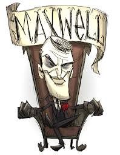
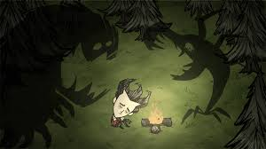

Don't Starve Together: The Story
In the dark and twisted world of *Don’t Starve Together*, survival is only part of the challenge. The story begins with Wilson, a scientist lured into a mysterious world by a cryptic voice belonging to Maxwell, the enigmatic antagonist. Maxwell traps Wilson and triks other unfortunate souls in the Constant, a nightmarish dimension full of bizarre creatures, unpredictable environments, and a constant battle for survival.
The Constant: A World of Madness
The Constant is a realm shaped by Maxwell’s will, but it is far from under his control. Each survivor is drawn into this world by their own flaws and desires, becoming part of an intricate web of manipulation. From haunting forests to scorching deserts, the land is alive with dangers that seem to respond to the survivors’ fears and choices.
The Rise of Charlie
Maxwell's reign is overthrown when Charlie, his former assistant, takes control of the Constant. Once a kind-hearted individual, Charlie succumbs to the darkness, becoming the new ruler of the realm. Under her influence, the Constant grows even more chaotic, and new horrors emerge, challenging the survivors in unexpected ways.

Survival and Friendship
Despite the harshness of the Constant, the survivors forge bonds as they struggle to stay alive. Each character brings unique strengths and weaknesses to the group, and their interactions often reveal glimpses of hope and humanity amidst the chaos. The cooperative nature of *Don't Starve Together* highlights the importance of teamwork in overcoming the world’s many challenges.

The Shadows' Influence
The Shadows, enigmatic entities that dwell in the dark, play a significant role in the story. They are both a source of power and a curse, offering abilities at a great cost. Survivors must decide whether to embrace the darkness or fight against it, knowing that every choice has consequences.
